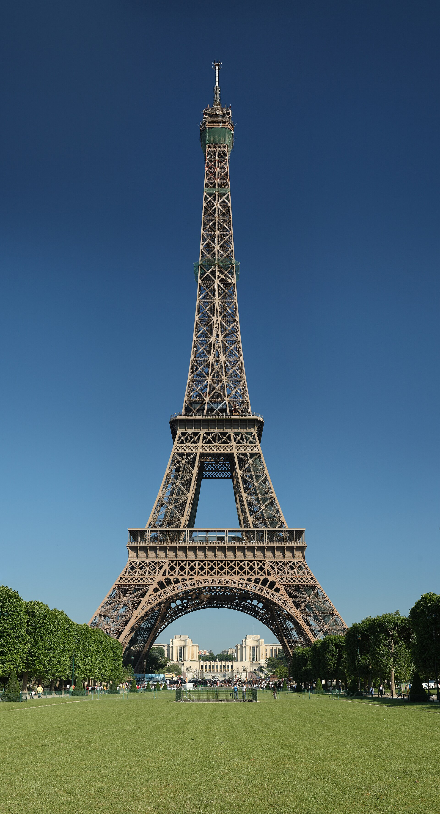

Oʻzbek diasporasi Fransiyada: kichik, yosh va Parij atrofida shakllangan jamoa
Fransiyadagi oʻzbek jamoasi — kichik, nisbatan yangi va asosan Parij atrofida toʻplangan. Fransiya statistikasi etnik mansublikni qayd etmagani uchun oʻzbeklarning aniq soni rasman maʼlum emas. Bu maqola faqat tasdiqlangan faktlarga tayanadi: 1929-yilgi Parij muhojir matbuotidan tortib bugungi restoran va madaniy tashkilotlargacha. Tekshirib boʻlmagan raqamlar yoki daʼvolar keltirilmaydi.

Oʻzbeklarning Fransiyadagi jamoasi — Rossiya, Turkiya yoki Qozogʻistondagi yirik diasporalarga qaraganda ancha kichik, nisbatan yaqinda shakllangan va asosan Parij hamda uning atrofidagi Il-de-Frans (Île-de-France) hududida toʻplangan jamoa. Muhim bir jihatni oldindan taʼkidlash kerak: Fransiyaning respublikachi statistika anʼanasi aholining etnik yoki milliy mansubligini qayd etmaydi, shuning uchun Fransiyadagi oʻzbeklarning aniq soni rasman maʼlum emas. Bu maqola faqat tasdiqlangan faktlarga tayanadi va hech qanday tekshirilmagan aholi raqamini keltirmaydi (Manba: Novastan — Novastan France; Wikipedia — Uzbeks).
Tarixiy ildizlar: 1929-yilgi Parij muhojir matbuoti
Fransiya bilan bogʻliq eng erta hujjatlashtirilgan iz — ommaviy koʻchish emas, balki kichik siyosiy-ziyoli muhojirlik nuqtasi. Turkiston mustaqilligi harakatining yetakchisi Mustafo Choʻqay 1929-yil dekabrda Parijda «Yosh Turkiston» jurnaliga asos soldi; jurnal Parijdan tahrir qilinib, Berlinda chop etilgan va 1939-yil avgustgacha 117 soni chiqqan. Bu Parijda 1930-yillarda turkistonlik siyosiy-ziyoli muhojirlik nuqtasi mavjudligini koʻrsatadi — ammo bu ommaviy oʻzbek koʻchishi dalili emas. Urushdan keyingi asosiy turkistonlik muhojir markazlari esa Fransiya emas, balki Germaniya va Turkiya boʻlgan (Manba: Shokay.kz — A fiery publicist; Wikipedia — Baymirza Hayit).
Zamonaviy toʻlqin: 2000-yillardan buyon
Oʻzbeklarning Fransiyaga zamonaviy koʻchishi asosan 2000–2010-yillardan boshlangan boʻlib, u koʻproq mehnat va qisman boshpana (asylum) izlash bilan bogʻliq. Fransiya bu borada Rossiya, Turkiya yoki Qozogʻistondek asosiy yoʻnalish emas: Yevropa Ittifoqi doirasida Oʻzbekiston fuqarolariga berilgan yashash ruxsatnomalarining yetakchi manzillari Polsha, Latviya va Chexiya boʻlgan, Fransiya esa kichik ulushga ega boʻlgan. Oʻzbekistondan Fransiyaga boshpana soʻrovlari ham mavjud, biroq ular mamlakatning eng koʻp uchraydigan boshpana manbalaridan emas (Manba: CABAR.asia — Migrants from Central Asia in the EU; CNDA — Ouzbékistan).

Aniq raqamlar borasida ehtiyot boʻlish lozim: Fransiyada Oʻzbekistonda tugʻilgan aholining yoki oʻzbek fuqarolarining ishonchli, ochiq eʼlon qilingan yagona rasmiy soni topilmadi. Shu sababli bu maqola muayyan aholi raqamini keltirmaydi — jamoa koʻp boʻlsa bir necha mingdan oshmasligi taxmin qilinadi, biroq buni tasdiqlaydigan rasmiy manba yoʻq. Yevropa miqyosidagi yagona taqqoslash nuqtasi sifatida, 2019-yilda butun Yevropa Ittifoqi boʻylab oʻzbekistonliklarga mehnat asosida berilgan ruxsatnomalar soni taxminan uch mingga yaqin boʻlgani keltiriladi, ularning asosiy qismi Polsha, Latviya va Chexiyaga toʻgʻri kelgan (Manba: CABAR.asia — Migrants from Central Asia in the EU).
Qayerda toʻplangan
Fransiyadagi oʻzbek va markaziy-osiyolik hayotning koʻrinadigan qismi asosan Parij shahri va Il-de-Frans hududida — restoranlar, madaniy tashkilotlar va talabalar jamoasi orqali namoyon boʻladi. Jamoa kichik va tarqoq boʻlgani uchun uni biror aniq tuman yoki shahar bilan bogʻlab, u yerda oʻzbeklar zich yashaydi deb aytish uchun ishonchli manba yoʻq; shuning uchun maqola jamoani umumiy tarzda «Parij atrofida» deb taʼriflaydi (Manba: Novastan — Novastan France).
Jamoa hayoti: restoranlar, matbuot va madaniyat
Bugungi kunda Fransiyadagi oʻzbek izining eng aniq hujjatlashtirilgan koʻrinishi — oshxona madaniyati. «Samarkand» restorani 2005-yil 15-aprelda Parijning Mare (Marais) mahallasida ochilgan va Yevropadagi birinchi oʻzbek restorani sifatida tilga olingan (u taxminan 2010-yilda yopilgan). Hozirda Parijda faol oʻzbek va markaziy-osiyo oshxonalari qatorida «Plov.fr» va «Samarcande» kabi joylar ishlaydi — bu oʻzbek taomlari madaniyatining shahardagi mavjudligini koʻrsatadi (Manba: Novastan — Novastan France).
Matbuot va ziyoli hayot borasida Parij alohida oʻrin tutadi. «Novastan» — Markaziy Osiyoga bagʻishlangan Yevropadagi yagona (fransuz, nemis va ingliz tillaridagi) ommaviy axborot vositasi boʻlib, 2011-yilda Bishkekda tashkil topgan va 2018-yil iyulda Fransiya uyushmasi (association) sifatida roʻyxatdan oʻtgan; uning markazi Parijda. Uni qisman Fransiyada oʻqigan markaziy-osiyolik (shu jumladan oʻzbek) talabalar qurgan — bu Parijdagi talaba va uyushma hayotining mavjudligini koʻrsatadi (Manba: Novastan — Novastan France).
Madaniy sohada «La Timuride» uyushmasi ham qayd etiladi; u 1988-yil 27-martda Parijda tashkil etilgan va temuriylar hamda Samarqand tarixi va madaniyatini konferensiya, konsert va koʻrgazmalar orqali targʻib qiladi. Shuni aniq taʼkidlash kerak: bu — temuriylar merosiga bagʻishlangan fransuz madaniy-ilmiy jamiyati, oʻzbek-muhojir jamoa tashkiloti emas; shuning uchun uni oʻzbek diasporasining tashkiloti sifatida emas, balki oʻzbek madaniyatiga qiziqishning Fransiyadagi bir koʻrinishi sifatida tushunish toʻgʻri boʻladi (Manba: Novastan — La Timuride intervyusi).
Taqqoslash: nega «kichik, ammo oʻsib borayotgan»
Oʻzbek diasporasi dunyo boʻylab asosan Rossiyada (baholovlar bir necha yuz mingdan ikki millliondan ortiqqacha), Turkiya va Qozogʻistonda toʻplangan; AQShda ham sezilarli jamoa bor (Oʻzbekistonda tugʻilganlar soni amerikalik maʼlumotlarga koʻra taxminan 68 ming). Bu yirik markazlarga nisbatan Fransiya — ancha kichik, chekka yoʻnalish. Shu sababli Fransiyadagi oʻzbek jamoasini «kichik, yangi va Parij atrofida shakllanayotgan» deb taʼriflash eng toʻgʻri va tasdiqlangan xulosa boʻladi (Manba: Wikipedia — Uzbeks; Pew Research — Uzbek Americans).
Nega bu muhim
Fransiyadagi oʻzbek jamoasi tarixini bilish diasporaning qanchalik keng tarmoqlanganini va har bir mamlakatdagi jamoaning oʻz xususiyatini tushunishga yordam beradi. Ushbu maqola ataylab ehtiyotkorlik bilan yozilgan: Fransiyada oʻzbeklarning aniq soni rasman qayd etilmagani uchun hech qanday tasdiqlanmagan raqam keltirilmadi, jamoani biror tumanga bogʻlaydigan tekshirilmagan daʼvolar ham kiritilmadi. Faqat ishonchli manbalar bilan tasdiqlangan faktlar — matbuot, restoranlar va madaniy tashkilotlar — asos qilib olindi.

Manbalar
- Novastan — Novastan France (Paris-based Central Asia media/association)
- Novastan — La Timuride interview
- Shokay.kz — Mustafa Chokay, a fiery publicist (Yosh Turkiston, Paris 1929)
- Wikipedia — Baymirza Hayit
- CABAR.asia — Migrants from Central Asia in the EU
- CNDA — Dossier pays: Ouzbékistan
- Wikipedia — Uzbeks
- Pew Research — Uzbek Americans / Uzbekistan-born in the US